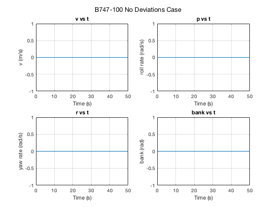
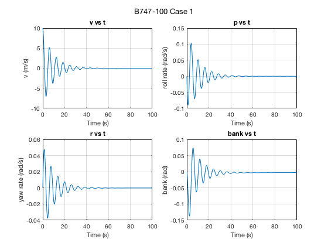
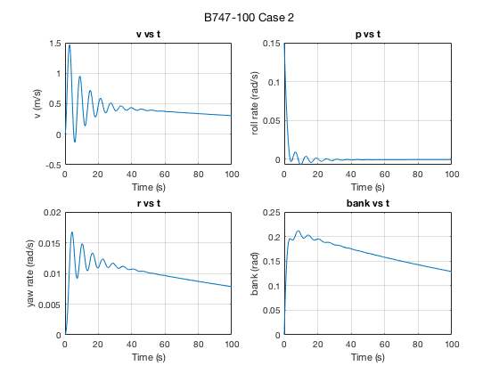
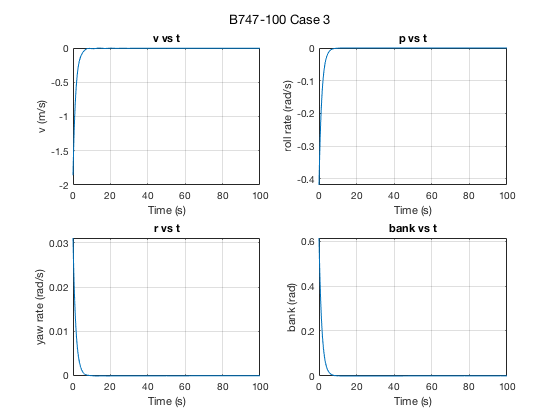
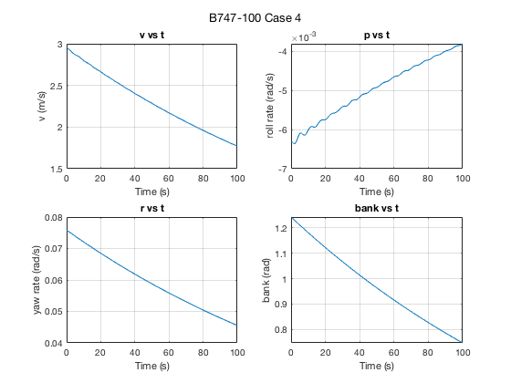

Contents
ASEN 3128 - Assignment 10 - Main
Lateral Dimensional Derivatives / B747-100 dynamics
Author: Margaux McFarland Collaborators: Date: 11/20/19
clc; clear; close all; %B-747 givens (Case II) W = 2831737.87; %N, weight g = 9.81; %N, gravity m = W/g; %kg, mass rho = 0.6530; %air density, kg/m^3 u0 = 157.886; %V=u in stability frame, airspeed, m/s S = 510; %planform area, m^2 b = 59.6433; %span, m theta0 = 0; %radians zeta = deg2rad(-6.8); %radians %moment of inertias Ix = 2.4676e7; %kg*m^2 Iy = 4.4878e7; Iz = 6.7384e7; Izx = 1.3151e6;
Problem 1
%coefficients from table 6.7 Cyb = -0.8771; Cyp = 0; Cyr = 0; Clb = -0.2797; Clp = -0.3295; Clr = 0.304; Cnb = 0.1946; Cnp = -0.04073; Cnr = -0.2737; %dimensionalize stability derivates using table 4.5 Yv = (1/2)*rho*u0*S*Cyb; Yp = (1/4)*rho*u0*b*S*Cyp; Yr = (1/4)*rho*u0*b*S*Cyr; Lv = (1/2)*rho*u0*S*b*Clb; Lp = (1/4)*rho*u0*b^2*S*Clp; Lr = (1/4)*rho*u0*b^2*S*Clr; Nv = (1/2)*rho*u0*S*b*Cnb; Np = (1/4)*rho*u0*b^2*S*Cnp; Nr = (1/4)*rho*u0*b^2*S*Cnr; mat = [Yv Lv Nv; Yp Lp Np; Yr Lr Nr];
Problem 2
%convert to stability frame Yv_s = Yv; Yp_s = Yp*cos(zeta); Yr_s = Yr*cos(zeta) + Yp*sin(zeta); Lv_s = Lv*cos(zeta) - Nv*sin(zeta); Lp_s = Lp*cos(zeta)^2 - (Lr + Np)*sin(zeta)*cos(zeta) + Nr*sin(zeta)^2; Lr_s = Lr*cos(zeta)^2 - (Nr - Lp)*sin(zeta)*cos(zeta) - Np*sin(zeta)^2; Nv_s = Nv*cos(zeta) + Lv*sin(zeta); Np_s = Np*cos(zeta)^2 - (Nr - Lp)*sin(zeta)*cos(zeta) - Lr*sin(zeta)^2; Nr_s = Nr*cos(zeta)^2 + (Lr + Np)*sin(zeta)*cos(zeta) + Lp*sin(zeta)^2; mat2 = [Yv_s Lv_s Nv_s; Yp_s Lp_s Np_s; Yr_s Lr_s Nr_s]; Ix_s = Ix*cos(zeta)^2 + Iz*sin(zeta)^2 + Izx*sin(2*zeta); Iz_s = Ix*sin(zeta)^2 + Iz*cos(zeta)^2 - Izx*sin(2*zeta); Izx_s = -((1/2)*(Ix - Iz)*sin(2*zeta) + Izx*(sin(zeta)^2 - cos(zeta)^2)); %prime coefficients Ix_prime = (Ix_s*Iz_s - Izx_s^2)/Iz_s; Iz_prime = (Ix_s*Iz_s - Izx_s^2)/Ix_s; Izx_prime = Izx_s/(Ix_s*Iz_s - Izx_s^2); %calculate A matrix A11 = Yv_s/m; A12 = Yp_s/m; A13 = (Yr_s/m)-u0; A14 = g*cos(theta0); A21 = (Lv_s/Ix_prime)+(Izx_prime*Nv_s); A22 = (Lp_s/Ix_prime) + (Izx_prime*Np_s); A23 = (Lr_s/Ix_prime) + (Izx_prime*Nr_s); A24 = 0; A31 = (Lv_s*Izx_prime) + (Nv_s/Iz_prime); A32 = (Lp_s*Izx_prime) + (Np_s/Iz_prime); A33 = (Lr_s*Izx_prime) + (Nr_s/Iz_prime); A34 = 0; A41 = 0; A42 = 1; A43 = tan(theta0); A44 = 0; %A matrix A = [A11 A12 A13 A14;... A21 A22 A23 A24;... A31 A32 A33 A34;... A41 A42 A43 A44]; %eigenvalues [evec, evals] = eig(A);
Problem 3
%time constants (1/s) tau1 = -1/real(evals(1,1)) tau2 = -1/evals(3,3) tau3 = -1/evals(4,4) %natural frequency of dutch roll wn = sqrt(real(evals(1,1))^2 + imag(evals(1,1))^2); %damping ratio damp_ratio = -real(evals(1,1))/wn;
tau1 =
9.9356
tau2 =
1.4729
tau3 =
196.1707
Problem 4
%dutch roll approximation
mat_approx = [A11 -u0; A31 A33];
eig_approx = eig(mat_approx);
Problem 5
%label and title strings for each state ylabel_str = ["v (m/s)","roll rate (rad/s)", "yaw rate (rad/s)","bank (rad)"]; title_str = ["v vs t","p vs t","r vs t","bank vs t"]; %vector of initial deviations from trim for each case dev_vec = [10 0 0 0; 0 0.15 0 0; -1.8563 -0.4185 0.0311 0.6148;... 2.9477 -0.0063 0.0758 1.2431]; %verify equilibirum %state_vec = [v; p; r; phi]; initials = [0 0 0 0]; t_span = [0 50]; %seconds [t, state_vec] = ode45(@(t,state_vec) g_fun(t,state_vec, A),t_span,initials); %plot figure(1) sgtitle("B747-100 No Deviations Case"); for j = 1:4 %loop through number of lateral states and plot each subplot(2, 2, j); plot(t, state_vec(:,j)); xlabel('Time (s)'); ylabel(ylabel_str(:,j)); title(title_str(:,j)); grid on hold all; end %loop through each case with varying deviations from trim for i = 1:4 %state_vec = [v; p; r; phi]; initials = dev_vec(i,:); t_span = [0 100]; %seconds [t, state_vec] = ode45(@(t,state_vec) g_fun(t,state_vec, A),t_span,initials); %plot figure(1 + i) sgtitle("B747-100 Case " + i); for j = 1:4 %loop through number of lateral states and plot each subplot(2, 2, j); plot(t, state_vec(:,j)); xlabel('Time (s)'); ylabel(ylabel_str(:,j)); title(title_str(:,j)); grid on hold all; end end    
Functions Called
The following functions were built and called as apart of this assignment.
function ydot = g_fun(t,state_vec, A) %ode function to find the lateral states ydot = A*state_vec; end